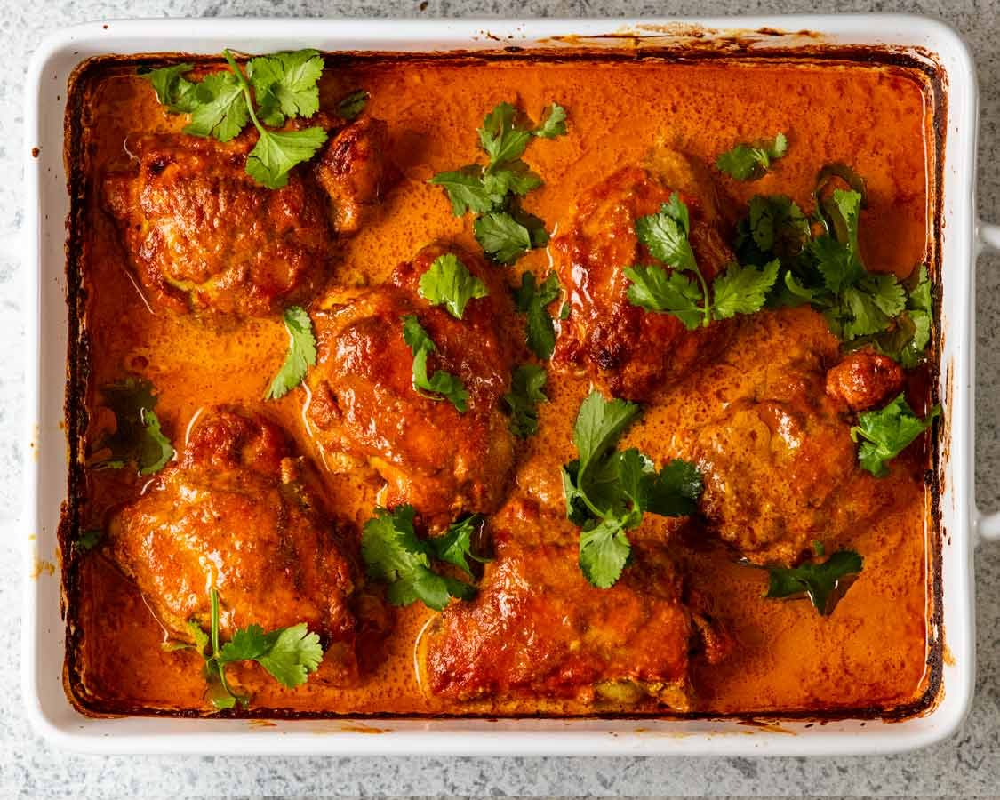

What does Butter Chicken look like? general overview

Description
butter chicken is marinated first then cooked on two stages, one without cream and the other with cream
Ingredients
- 2lbs chicken thighs
- 3/4 cup yogurt
- 4 cloves garlic
- 1 inch of ginger
- 1 tsp turmeric
- 2 tsp chili powder
- 2 tsp Garam masala
- 2 tsp salt
Steps
- Cook in 1 Tbsp ghee 1 medium onion 3 cloves garlic 1/2 inch ginger 1 Tbsp Garam Masala 2 tsp chili powder 1 tsp turmeric
- 1 Tbsp tomato paste 1 can diced tomatoes 1/2 cup cashews 1 cup heavy cream
- Add back the chicken and cook for 10-15 more minutes.
- Finish with fenugreek leaves and cilantro and enjoy
Next recipe